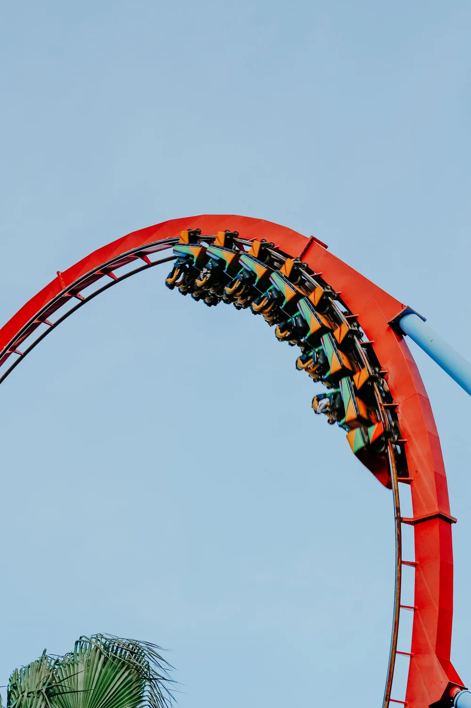

PortAventura World
El parque temático más importante de Cataluña, con seis áreas ambientadas y atracciones para todas las edades, desde montañas rusas intensas hasta zonas pensadas para los más pequeños. El recinto incluye también Ferrari Land y el parque acuático Caribe Aquatic Park, ideales para combinar en una visita de varios días. El plan de referencia en la Costa Daurada para un día completo de atracciones.
Avinguda Alcalde Pere Molas, s/n, 43480 Vila-seca Visitar web oficial